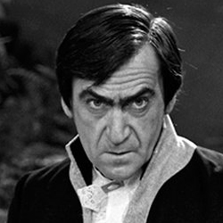

| Home | The Doctors | The Companions | The Villans |
|
|||
|
SalamanderRamon Salamander (portrayed by Patrick Troughton) was a ruthless Mexican-born politician who attempted to take control of the United Zones Organisation, a supranational World government that exists in 2030. He gained influence through an invention he developed that diverts solar energy to barren parts of the world increasing food production. He also built a secret underground lair in Australia with technology that allowed him to trigger volcanoes and earthquakes. The lair is staffed by scientists who believe the world has been irradiated by a nuclear war, and for some reason they must fight back against the surface by causing natural disasters. Salamander uses these disasters to his advantage – he unseats one rival, Alexander Denes, the Controller of the Central European Zone, by causing a dormant volcano in Hungary to erupt and having Denes blamed for negligence. He then tries to force Denes's deputy to poison him through blackmail. As the Second Doctor was identical to Salamander, an opposing faction sought the Doctor's help to gain more evidence of his misdeeds. It later transpires that the group's leader Giles Kent, the former Deputy Security Leader for North Africa and Europe who was undermined by Salamander, is just as power-hungry. He had previously worked with Salamander in developing the secret bunker and corralling the underground scientists. Salamander was portrayed by Partick Troughton in a dual role. At the end of the story Salamander tries to flee justice in the TARDIS by impersonating the Doctor; however, Jamie sees through his deception. Salamander is then sucked out of the ship when the TARDIS dematerialises with its doors open and is thrown into the time/space vortex |